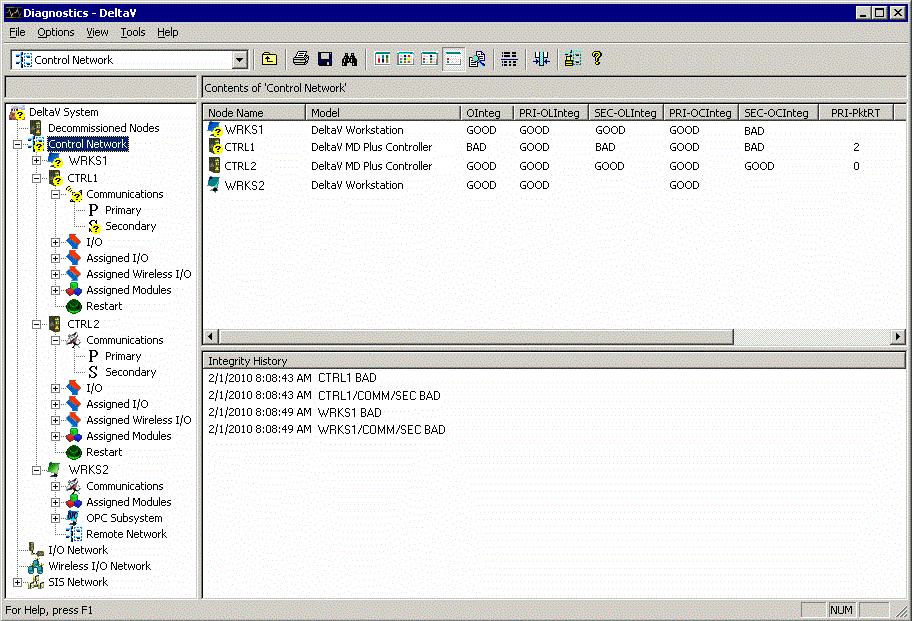
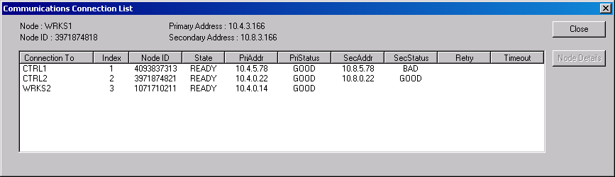
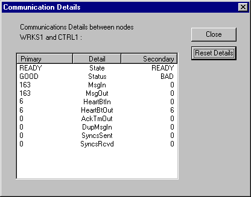

Communication
If you have communication problems, run the DeltaV Diagnostics program. Select the ACN and check the communication status. Then, check each device on the network to see if it is communicating properly.
When communication problems exist, clicking Control Network on the tree view in the Diagnostics program provides a quick overview to help determine the source of the problem. A communication integrity problem is indicated on a node when it is unable to communicate on the affected link. As shown in the example diagram below, workstation WRKS1 is running the Diagnostics program and gathering information on nodes CTRL1, CTRL2, and WRKS2 (in addition to itself —WRKS1). A communication problem exists on the secondary connection between nodes WRKS1 and CTRL1, as indicated by the overlay on the Secondary communications level of the hierarchy tree. Communications on the secondary are OK to node CTRL2, and node WRKS2 has no secondary connection.
The Contents View shows all 4 nodes and their current communication status. PRI and SEC indicate primary and secondary links. In this case, both WRKS1 and CTRL1 show BAD SEC-OCInteg. OCInteg is the Overall Connection Integrity, which is BAD when ANY connection to this node is BAD. To determine which of these nodes is causing the BAD integrity, look at the SEC-OLInteg parameter. OLInteg is the Overall Link Integrity, which is BAD when ALL connections to this node are BAD (same information as shown by the overlay on the hierarchy tree). In this case, WRKS1 shows GOOD SEC-OLInteg (able to communicate with at least one other node—CTRL2 in this case), and CTRL1 shows BAD SEC-OLInteg (unable to communicate with any other node). From this you can see that the source of the problem is the secondary connection on node CTRL1.

In summary, the OLInteg Overall Link Integrity parameter being BAD typically indicates the source of the problem.
For additional details (typically not required), right-click the Communications (or Primary or Secondary) level on one of the affected nodes. Then, click Display Comm Connection List. This list shows the current status of communications between this node and all the nodes with which it is communicating.

In this case, the SecStatus shows BAD on node CTRL1.
Selecting the node of interest (controller CTRL1 in the example above) from the list under Connection To and then clicking the Node Details button displays specific packet and error counters for the connection between WRKS1 (the node originally selected) and node CTRL1.

The secondary normally has no traffic, so the communications scheme relies on background traffic (Heartbeats) to determine whether the integrity/connection is good. Heartbeats are sent/received every 15 seconds between nodes expecting to communicate. Integrity is not marked bad until 3 Heartbeats are missed, so it takes 45–60 seconds maximum for a disconnected cable to show bad.
The above statistics show that the secondary on node WRKS1 sent 6 Heartbeats Out to node CTRL1 and received 0 Heartbeats In from it.
Similar statistics are displayed if you select the node CTRL1 and then select detailed statistics between CTRL1 and node WRKS1. In this case, you would not know which of the 2 nodes was at fault, only that they could not communicate with each other.
You can reset these Communication Details counters by clicking the Reset Details button. You can also confirm proper connection by right-clicking the Controller secondary on diagnostics, and then clicking TCP/IP Ping.